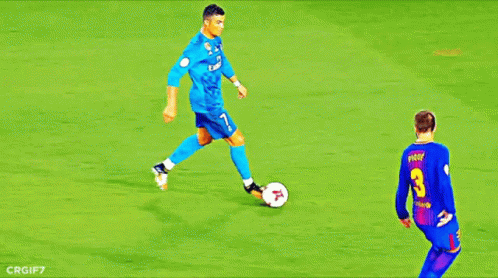

um homem,uma maquina, uma besta enjaulada com odio, ele vence, vence e VENCE.
Ronaldo tornou-se no jogador mais caro da história do futebol após a sua transferência em 2009 do Manchester United para o Real Madrid, num acordo no valor de 80 milhões de libras esterlinas (94 milhões de euros). Este contrato estabeleceu a sua cláusula de rescisão em 1 000 milhões de euros e estipulou uma quantia anual de 12 milhões de euros, o que fez dele um dos jogadores de futebol mais bem pagos do mundo. Em abril de 2012 foi considerado o jogador de futebol mais valioso do mundo, após um estudo que atribuiu receitas de 40 milhões de euros anuais ao jogador português e em Março de 2015 o futebolista mais rico do mundo, com uma fortuna pessoal avaliada em 210 milhões de euros. Em junho de 2016, a Forbes considerou-o o desportista mais bem pago do mundo, facto inédito até então, dado ser a primeira vez aparecer um futebolista a encabeçar esta lista. Um dia após completar 36 anos, após marcar contra a Roma pelo campeonato italiano, o português se tornou o melhor marcador de sempre do futebol.
"Se vocês querem ter sucesso, então preciso que amem este clube do fundo do coração. Vocês precisam comer, dormir e lutar por este clube. Quer você jogue ou não, você precisa apoiar seus companheiros de equipe e sempre dar 100% pelo clube"
